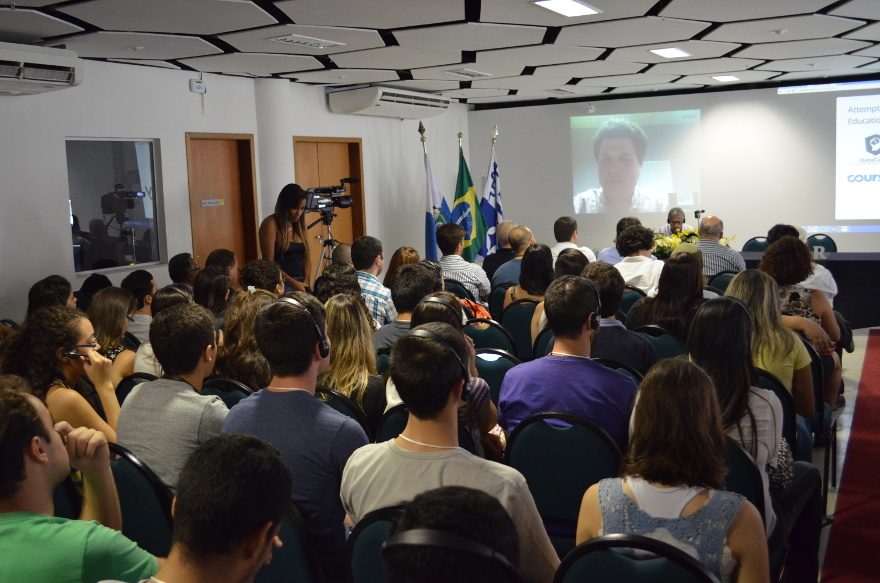
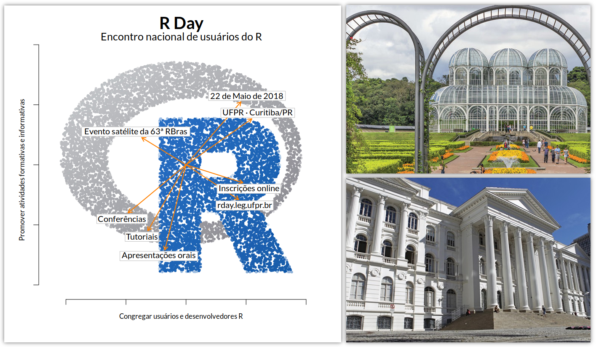

R in Latin America

Following on from our post on R in Africa this next post in the series looks at the R community across Latin America.
Conferences
As the use of R has grown in Latin America, there has been an increasing demand for local R conferences. The community has responded and a number of conferences are planned for the coming months.
International Seminar on Statistics with R
One of the first to spot the demand was Luciane Alcoforado, a professor at the Fluminense Federal University (UFF) in Rio de Janeiro, Brazil. Realizing there was no large R event in Brazil, she set about coordinating the first International Seminar on Statistics with R (SER: Seminário Internacional de Estatística com R), which was held in Niterói in May 2016.

Luciane Alcoforado, Coordinator of the first SER
More than 250 people attended this pioneering event, with attendance balanced across academia and industry. Encouraged by this success, the I SER organizers ran the event again in 2017, with an expanded program and similar numbers attending.

Sean Kross presents remotely at the first SER
A third edition, III SER, is now planned for May 22-24, 2018, to be hosted again by UFF in Niterói, Brazil. On the first day, 8 mini courses will be run, aimed at both practitioners and students. This year most of the international guests come from the USA and England. They include Jesse Mostipak, Becky Pattinson, Garreth Maccray, and Gabriela de Queiroz. These guests will present alongside invited speakers from the local region. There will also be thirty selected contributed talks and a poster session with awards for the best three of each. It’s a huge opportunity to get your research known. The last conference day will close with a tribute session to Prof. Djalma Pessoa who was a pioneer R user in Brazil.
Registration to III SER and the mini-courses is open now and the call for papers is open until March 23 2018.
R Day
A second event in Brazil, R Day, will take place at the Federal University of Paraná (UFPR), Curitiba, on May 22, 2018. The Statistics Department at UFPR was one of the first in Brazil to adopt R as the standard programming language for statistics teaching, in 2002. It was also the first institution to host a CRAN mirror in the country, and started the R-br mailing list in 2011, which now has more than 1000 subscribers.
The R Day is organized as a satellite event of the 63rd RBRAS meeting (Brazilian Region of the International Biometric Society), and is endorsed by the R Foundation to further develop the academic R community in Brazil. There will be three keynotes, 9 oral presentations, and 8 tutorials, aimed at both users and developers. The main goal is to be community-driven, so anyone can submit proposals for oral presentations and/or tutorials (only the three keynote speakers will be invited by the organizers).
The aim of R Day is to gather the vast R community in Brazil, by offering the possibility for users and developers to show their work and exchange experience on all sorts of R subjects. Proposals for oral presentations and tutorials are open until April 04. The registration is free and can be made until April 22.
For more information and updates, registration and proposal forms, checkout the R Day website, and follow us on Facebook and Twitter.

R Day logo (left), Curitiba Botanical Garden (top right), and UFPR historical building (bottom right)
satRday Bogota
The first Latin American chapter of the one day conference series satRdays will take place in Bogota, Colombia in August 2018. The focus of the conference will be about tidy concepts applied to data visualization. It is organized by Datasketch, a Data Journalism Portal for Latin America.
The main goal of the conference is to create a common space for interaction among newbies and experts in R. Special interest will be given to works created by or for underrepresented communities and to showcase different solutions developed using R for the different elections that are happening in 2018 in different Latin American countries.
There are tentative plans for a workshop session the day before with hands-on tutorials about:
- Data visualization and common mistakes.
- Data structuring and preparation: PDFs, Databases and API’s.
A website containing more details will be available soon.
LatinR
On October 25, 2017, an announcement was made by Heather Turner on the RUG Organizers Slack: the R Foundation Conference Committee would like to see academic-focused R events in regions not currently covered by useR! In less than a week, a group of Latam R-Ladies were organizing their first conference-call to start thinking about how this challenge could be achieved. This quick response was not the result of mere chance, but the consequence of a year in which the R community — both RUG and R-Ladies groups — grew stronger in South America. By mid November everything was set-up: a name, a place, a date, and a motivated international organizing committee.
LatinR 2018 will be held in Buenos Aires on September 4-5 within the 47th Argentinian Meeting of Informatics and Operational Research (JAIIO), which is organized by The Argentinian Informatics Society (SADIO). With a diverse and renowned Scientific Committee, this two-day event aims to bring together researchers, students, and R-enthusiasts from different backgrounds in order to strengthen the R community and make the impact that R is having in the region more visible, in both academic and non academic contexts.
For more information about oral presentations & poster submission, keynotes, and workshops, you can check out the LatinR website or follow us on Twitter and Facebook: @LatinR2018.
ConectaR 2019
In 2019, it is Costa Rica’s turn: ConectaR 2019 will take place in San José. The event has the endorsement of R Foundation and will be hosted at the University of Costa Rica (UCR). ConectaR has an organizing committee comprising members of academia (School of Statistics, Pure and Applied Mathematics Research Center (CIMPA)), public research centers (The Development Observatory, Bioversity International (CGIAR)) and industry (ixpantia). ConectaR will have two keynote speakers (yet to be confirmed) and will be receiving proposals for oral presentations and posters starting April 2018. In addition to that, there will be tutorials, invited talks, and a job fair. An attendance of over 150 people is expected, with the goal of building a community of R users in the Central American Region.
Other Initiatives
R/Bioconductor Latin American Developers’ Workshop
In recent years, biology has seen a rise in the use of technologies that enable high-throughput, quantitative, data-rich profiling of cellular states. As a result, the field faces computational challenges to analyse such data. The R/Bioconductor project is an open source, open development software platform that provides tools to translate complex data sets into biological knowledge. An R/Bioconductor workshop will be held in Cuernavaca, Mexico on July 30 - Aug 3, 2018.
The workshop is aimed at students and researchers interested in the analysis of biological data. We encourage applications from diverse disciplines, including but not limited to biologists, bioinformaticians, data scientists, software engineers and programmers. The main goals of the workshop are:
- Teaching participants the principles of reproducible data science through the development of R/Bioconductor packages.
- Turning bioinformatic software users into bioinformatic software developers.
- Fostering the exchange of expertise and establishing multidisciplinary collaborations.
- Creating a community of Latin American scientists committed to the development of software and computational pipelines for biological data analysis.
- Helping to train bioinformatics instructors that can continue to grow in their local communities.
This workshop is part of a long-term project to create a community of developers from Latin America. We hope to hold regular meetings in the future (similar to BioC, EuroBioc and BioCAsia) where attendees present their own software contributions.
A website containing more details will be available soon.
Local groups
Beyond conferences and workshops, local groups provide a venue for R users to meet more regularly. Jumping Rivers provide a user group directory, which also covers R-Ladies groups, however as R-Ladies are expanding rapidly it is worth checking the R-Ladies Starter Kit for the latest status.
Recently members of the RUG and R-Ladies groups in Bogota, Columbia collaborated on a striking intervention about feminicides in Colombia using plots created in R. Read more on their initiative in this report (warning: readers may find the content distressing). This is an example of how local groups can work together on wider issues as well as providing networking and development opportunities for their members.
Making Connections
Part of building the community in Latin America is making connections between disconnected groups. If you think we have missed something, or you would like to be involved in plans for future events in the region, let us know in the comments or contact us on email or Twitter.
Banner image shows the poster session at I SER.